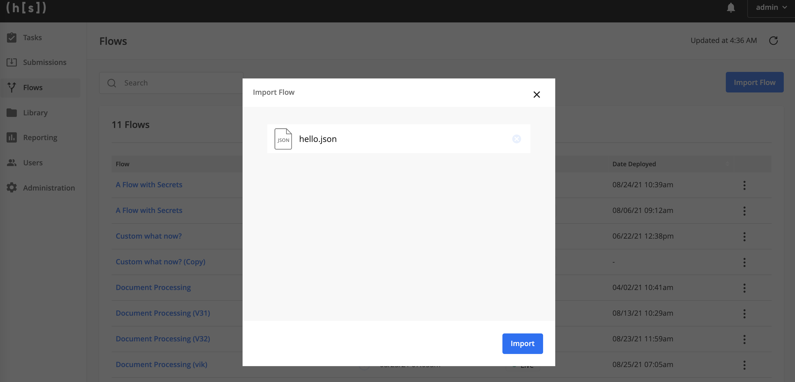
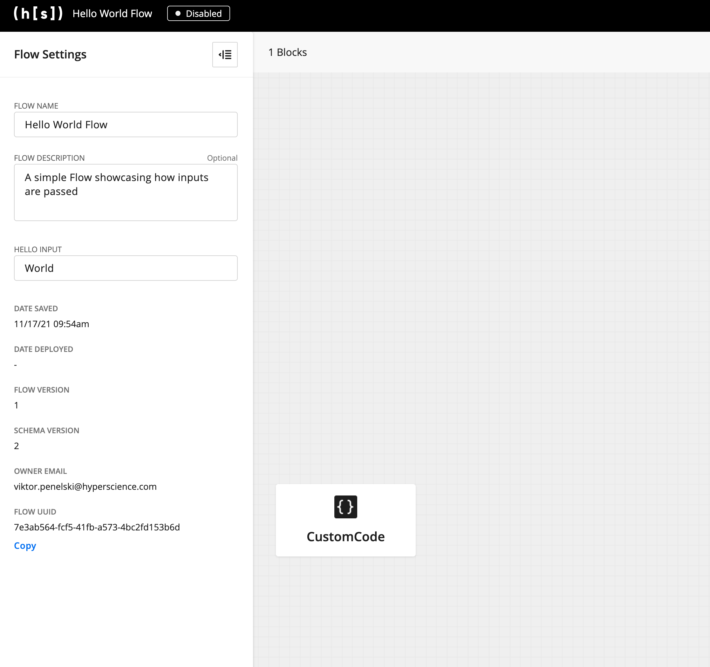

Quickstart
As part of this quickstart, we will build and deploy a simple Flow.
After completin the quickstart, you will:
have a local environment with
flows-sdkinstalledpackage a simple “Hello World” Flow into an artifact
import that artifact into a running Hyperscience platform
While this quickstart imports a simple “Hello World” Flow, the same steps are used when developing and exporting more complex flows like “Document Processing”.
Prerequisites
python 3.7+
This quickstart assumes that you have a unix shell, but very similar steps can also be used for other terminals.
Steps
Create a virtual environment and source it
python3 -m venv venv source venv/bin/activateInstall the flows_sdk package
Link below is used for illustrative purposes. Contact your CX representative for an exact installable link!
pip install https://build-storage.int.hyperscience.com/flows_sdk/v0.1.2/flows_sdk-0.1.2-py3-none-any.whl
Download the Hello Flow example
Package the example flow to a .json file
python flow.py > hello_flow.json
the filename
flow.pycan be different depending on how you saved the fileupload the produced
hello_flow.jsonto a running Hyperscience instance fromhttps://{hyperscience-url}/flows-> Import Flow

If everything went as expected, you should be redirected to the Flow Studio:
